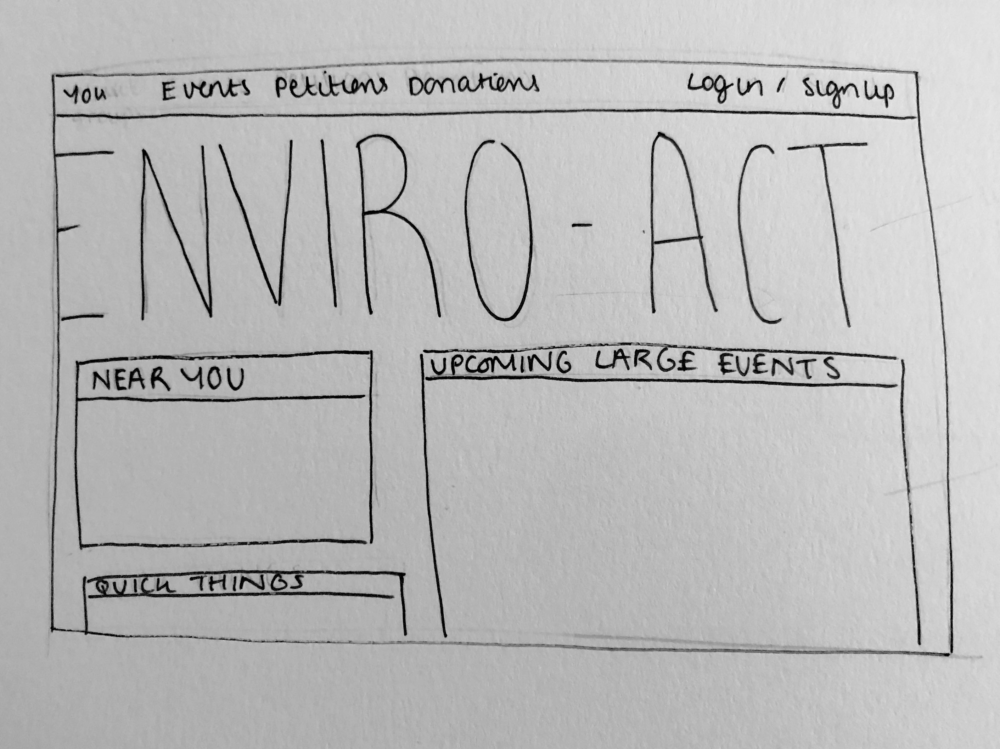
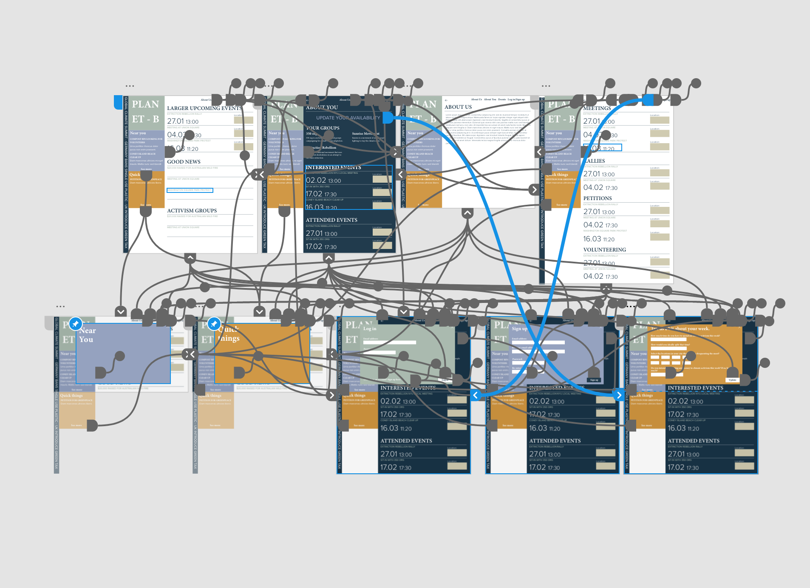

RESEARCH QUESTION
USER SURVEY
LINK TO SURVEY
SURVEY RESULTS
IDEATION
FIRST DRAFT
SECOND DRAFT
DESIGN SYSTEM
WIREFLOWS
HIGH FIDELITY
FINAL PROTOTYPE
Climate change activism is something I’ve wanted to get fully and truly involved in but struggled to do so making banal excuses such as lack of time, and misorganization. I realised that this is not an uncommon behaviour pattern, plenty of people have the motivation, however, it often does not stretch far enough to push them to search through winding roads of the internet to find the information they need. I think an application or website that organizes this information and tailors it towards the ways you’re able to contribute would be a great use of design.
- How motivated are you to participate in the current climate change emergency?
- If you already participate, in which ways do you do so?
- What would you say is the main hinderance of you contributing more?
- If you answered 'Lack of time', would you find access to a wide range of petitions or donation based organizations a realistic way to contribute?
- If you answered 'Lack of awareness', what platforms, do you think, would be most helpful in informing you of future climate change events?
- If you answered 'Not being in full agreement with the ideals of some climate change groups', why?
- Is there anything that would make you feel more comfortable / more inclined to attend events?
- How often would you (realistically) see yourself contributing to this cause?
- Do you think a personalized application or website, informing you of local/online events that fit with you're available time would appeal?
CLICK ME!

From my survey results I was able to conclude that in regards to participating in climate activism, time and organization are the main hinderances. Based on my survey results I decided that the main ways I could use my design to battle the accessibility of climate change activism was to create a feed that resembled one of a social media platform. 85% of people who participated in my survey said that they thought the most helpful way of informing people of future climate change events would be via a social media platform. I thought that to solve the hinderance of lack of time, the feed could be tailored to how much time you tell it you want to spend on climate activism. Additionally, there was an equal spread of the reasoning behind those who were reluctant to support particular climate activist groups, therefore, I think a simple page design where all the local activist groups, and they’re values, are displayed would be beneficial to the webpage.
The main problem that this design aims to solve is the lack of organization within climate activism. People are used to seeing all the things they are interested in one personalised feed, the ‘follow’ features allows this on nearly all social medias. Sorting all of relevant groups, events and petitions relating to climate activism, on a personalised account may increase awareness for all these things. Additionally, this design aims to decrease use of excuses such as ‘I don’t have a lot of time’ and ‘it’s too out of my way’ by personalising the feed using a short, quiz-like feature. This feature will ask the user which areas of their city or town they frequent the most and how much time they’re willing to contribute. I thought the user could decide to take the quiz as often and whenever they would like as peoples schedules change frequently.


 CLICK ME!
CLICK ME!
CLICK ME!
CLICK ME!
#95A2BF
#D09846
#AABAAF
#213B4D
